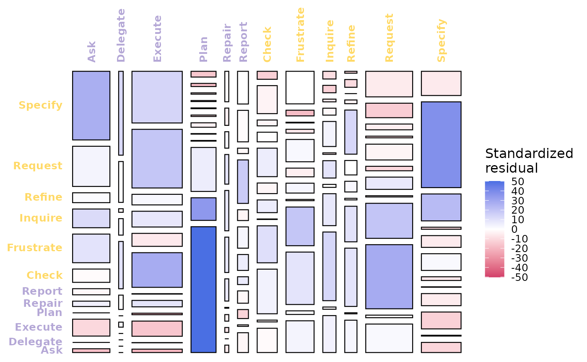

htna-named alias of Nestimate::mosaic_plot(). Renders a
chi-square mosaic where row x column area equals the joint share
of (from, to) transitions and fill encodes the standardized
residual (blue = over-represented, red = under-represented,
white = at-expected).
Arguments
- x
One of the four data-bearing Nestimate classes:
netobject(single mosaic of$weights),netobject_group(one panel per group),mcml(between-cluster mosaic by default; per-cluster panels withlevel = "within"), orhtna(single mosaic of$weights; htna inherits netobject so the geometry matches). Also accepts a contingencytableor plain numericmatrixfor ad-hoc plotting.- ...
Ignored.
Value
A ggplot or gtable, depending on input shape. See
Nestimate::mosaic_plot() for full details and the per-class S3
methods.
Details
Designed with htna in mind: Nestimate ships an explicit
mosaic_plot.htna S3 method that recognises the actor partition
on htna networks. Pass an htna network from build_htna()
directly. The underlying transition matrix must be integer-weighted
(build with method = "frequency"), since the chi-square test
needs counts.
Axis tick labels are coloured by actor group using the htna
palette (htna_palette), matching the colours used elsewhere in
htna (e.g. plot_htna()).
Suffixed _htna to avoid clashing with Nestimate::mosaic_plot()
when both packages are loaded.
See also
plot_frequencies_htna() for the marginal-frequency
companion view.
Examples
# \donttest{
data(human_ai)
net <- build_htna(human_ai, actor_type = "actor_type",
method = "frequency")
#> Warning: A network with one long sequence is not recommended and can't be validated using bootstrap and other confirmatory testings.
#> Metadata aggregated per session: ties resolved by first occurrence in 'session_date' (1 sessions), 'cluster' (42 sessions), 'actor_type' (24 sessions)
mosaic_plot_htna(net, n_perm = 50, seed = 1)
#> Warning: Vectorized input to `element_text()` is not officially supported.
#> ℹ Results may be unexpected or may change in future versions of ggplot2.
#> Warning: Vectorized input to `element_text()` is not officially supported.
#> ℹ Results may be unexpected or may change in future versions of ggplot2.

# }